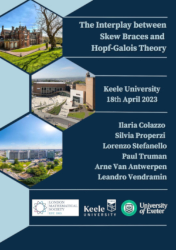

University of Exeter – 07th-08th September 2023
07th September 2023
Arne Van Antwerpen: The non-fixing graph of a skew brace (14:30-15:30)Tea break (15:30-15:40)
Paul Truman: TBA. (15:40-16:10)
Ilaria Colazzo: Cabling for non-involutive solutions. (16:10-17:40)
Isabel Martin-Lyons: TBA. (17:40-18:40)
08th September 2023
Joao Faria Martins: TBA. (09:00-10:00)Senne Trappeniers: TBA. (10:00-11:00)
Coffee break (11:00-11:20)
Eric Jespers: TBA. (11:20-12:20)
Keele University – 18th April 2023

Leandro Vendramin: Some problems on skew braces. (09:00-09:30)
Arne Van Antwerpen: Nilpotency in skew braces: an overview. (09:30-10:30)
Coffee (10:30-11:00)
Silvia Properzi: A graph associated with finite skew braces. (11:00-12:00)
Ilaria Colazzo: The structure monoid of set-theoretic solutions to the YBE. (12:00-13:00)
Lunch (01:00-02:00)
Lorenzo Stefanello: Skew braces and the Hopf-Galois correspondence. (02:00-03:00)
Tea (02:30-03:00)
Paul Truman: Skew bracoids and Hopf-Galois structures on separable extensions. (03:30-04:30)
Arne Van Antwerpen: Nilpotency in skew braces: an overview. (09:30-10:30)
Coffee (10:30-11:00)
Silvia Properzi: A graph associated with finite skew braces. (11:00-12:00)
Ilaria Colazzo: The structure monoid of set-theoretic solutions to the YBE. (12:00-13:00)
Lunch (01:00-02:00)
Lorenzo Stefanello: Skew braces and the Hopf-Galois correspondence. (02:00-03:00)
Tea (02:30-03:00)
Paul Truman: Skew bracoids and Hopf-Galois structures on separable extensions. (03:30-04:30)